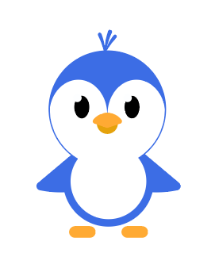
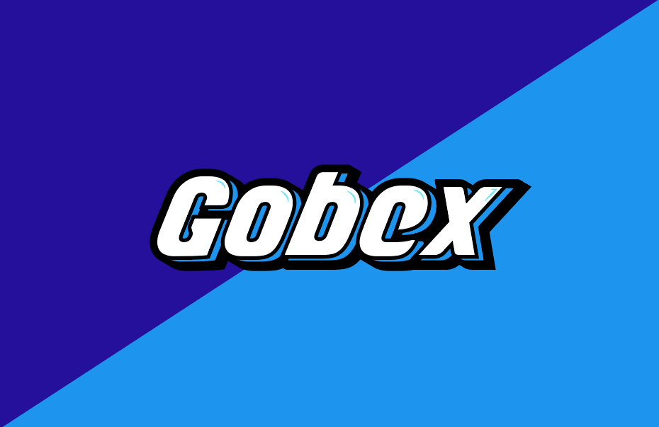
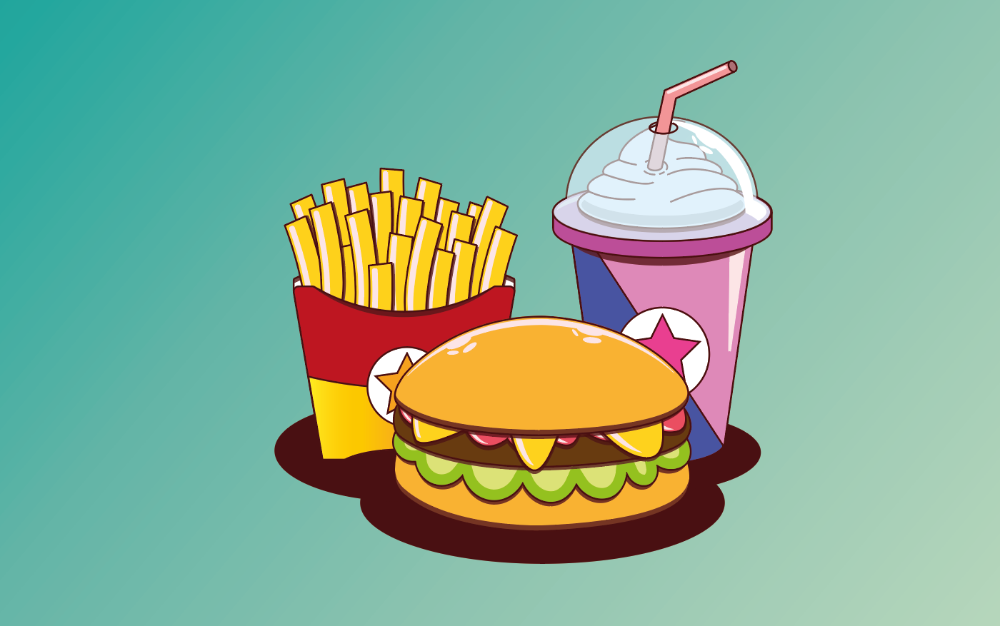
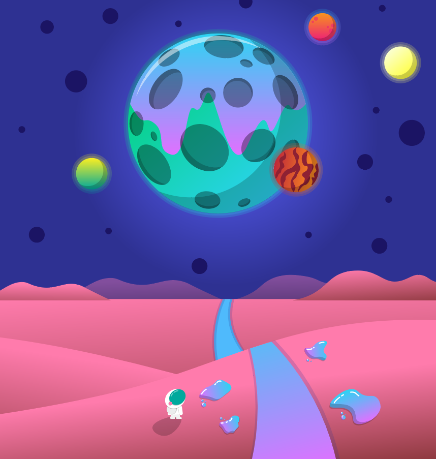
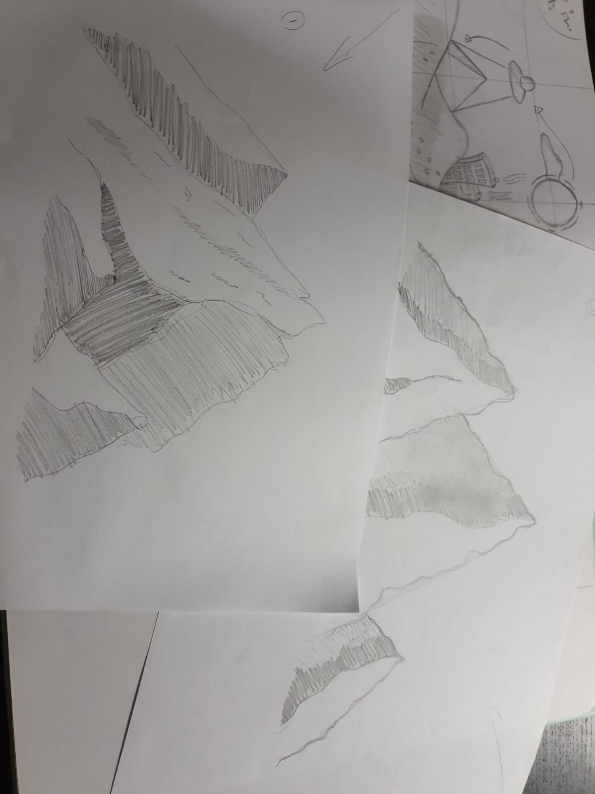
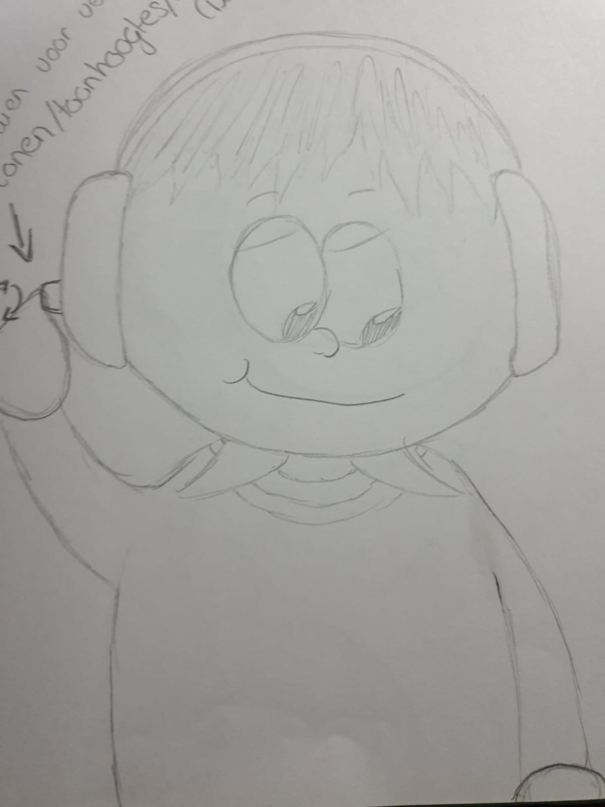
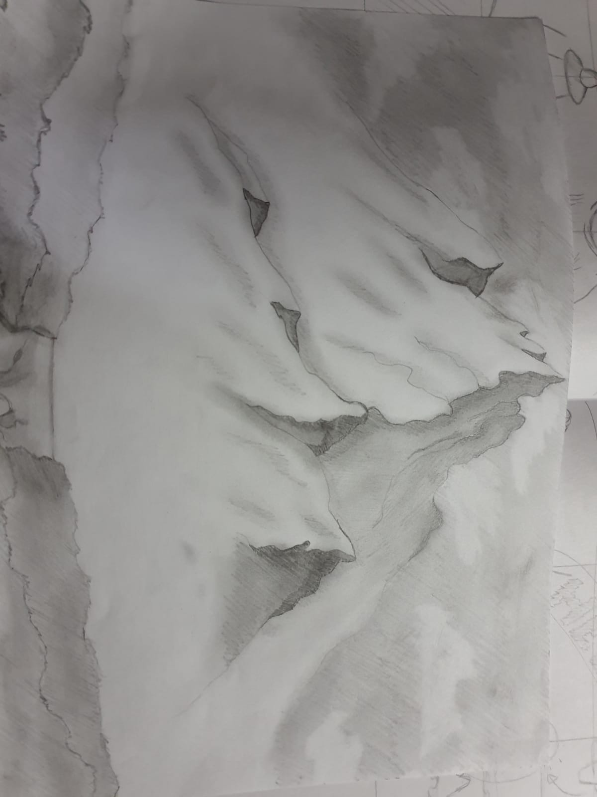
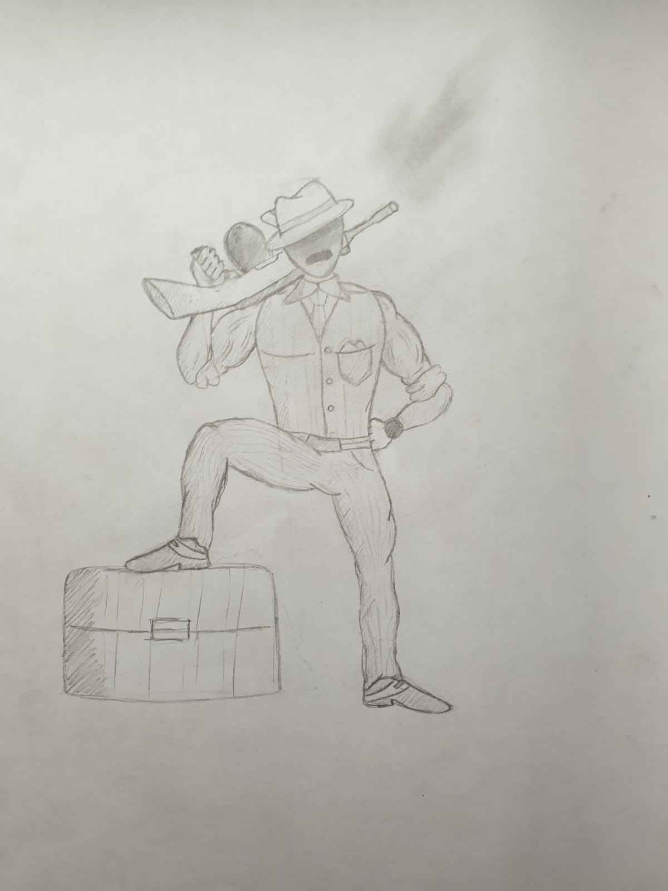

Leerdoel 1
Illustration
“Het verbeteren van m'n Adobe Illustrator vaardigheden aan de hand van nieuwe functies en shortcuts. Hierbij wil ik focussen op de elementen van licht en schaduw.” Tijdens de start van dit leerdoel kende ik vrijwel alleen de basis van Illustrator en wilde ik me hier graag meer in verdiepen. Tekenen is vanaf jongs af aan een hobby geweest van me (echter sinds de 2e klas niet meer opgepakt) en dit wilde ik graag ook kunnen door vertalen naar digitale illustraties. Zo ben ik eigenlijk bij m'n leerdoel uitgekomen. Om te beginnen zijn hieronder foto's van de start van het blok te zien.
 Na 5 weken verschillende tutorials, eigen opdrachten & oefeningen uit te voeren ben ik uitgekomen op de onderstaande resultaten waar ik achteraf gezien erg trots op!
 Leerdoel 3
Tekenen
“Het verbeteren van mijn tekenvaardigheden door nieuwe trucjes aan te leren en op deze manier ook een aantal stijlen te verkennen. Het leerdoel wordt onderverdeeld in natuur & anatomie van de mens. De natuur vooral voor de diverse vormen en technieken/effecten die hierop toegepast kunnen worden. De anatomie van de mens is vooral omdat ik er moeite mee heb om characters juist te tekenen wanneer ze iets uitvoeren. Hierbij wil ik vooral verkennen of er een methode is om gemakkelijk elke positie voor een character te kunnen tekenen.”
Het 3e leerdoel is voor mij dus vooral het verbeteren van mijn tekenvaardigheden. Vanaf jongs af aan heb ik aanleg voor tekenen maar dit heb ik eigenlijk niet meer doorgezet sinds de 2e klas. Het leek mij dus een leuk idee om hier een leerdoel voor op te stellen en wellicht een nieuwe hobby mee op te pakken na afloop! Hieronder zijn afbeeldingen zien van de start van beide onderwerpen.
 Na 5 weken zijn er mooie resultaten uitgekomen, ondanks dat het tekenen niet altijd evengoed lukt. Doorzetten is de sleutel wanneer het tegenzit. Hieronder zijn de eindresultaten te vinden waar ik achteraf ook erg blij mee ben!
 